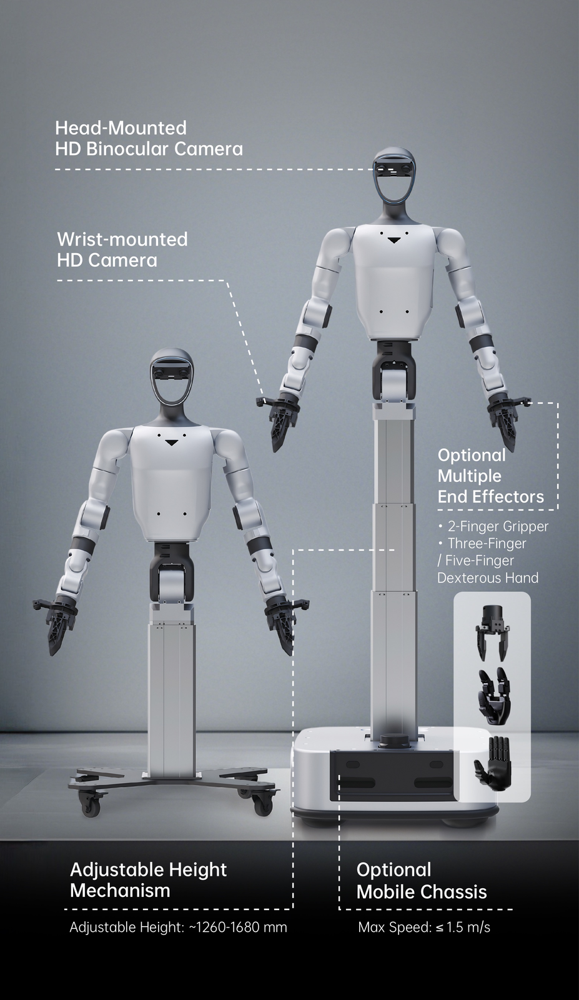
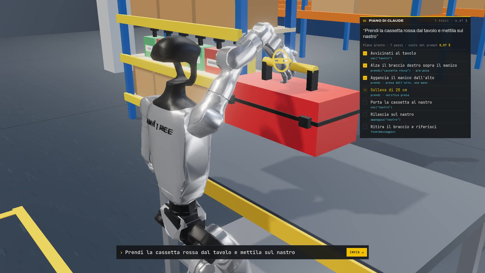
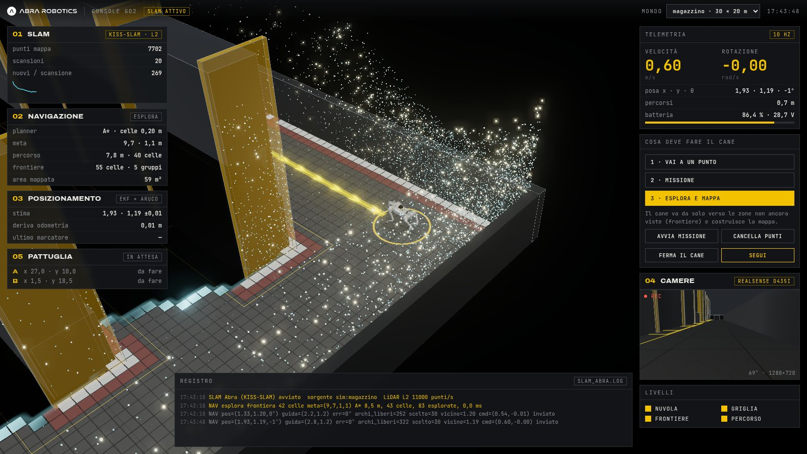

Il digital twin di un robot Unitree risponde alla domanda che conta prima di un acquisto: il robot riesce a fare questo compito, in questo ambiente? I robot arrivano senza un'applicazione pronta, e il vero costo di un progetto è lo sviluppo. Provare in simulazione costa molto meno che scoprire un limite dopo aver comprato l'hardware.
Cos'è un digital twin di un robot
Un digital twin utile ha quattro parti:
- Il robot: modello cinematico e dinamico (MJCF per MuJoCo, URDF o USD per Isaac Sim) con masse, giunti, limiti e attuatori.
- L'ambiente: banchi, scaffali, pavimento e oggetti nelle misure reali, non una scena generica.
- La fisica: gravità, contatti, attriti. È qui che si vede se una presa tiene o se il robot perde l'equilibrio.
- La stessa interfaccia del robot: il programma manda gli stessi comandi e legge gli stessi stati del robot vero. Così il codice provato in simulazione passa al robot senza riscriverlo.
L'ultimo punto è quello che distingue un digital twin da un'animazione 3D. Nei simulatori ufficiali Unitree il programma comunica in DDS con gli stessi messaggi del robot (LowCmd, LowState, SportModeState), quindi si sviluppa in simulazione e poi si cambia solo l'interfaccia di rete.
Physical AI: perché passa dalla simulazione
Con physical AI si intende l'intelligenza artificiale che agisce nel mondo fisico tramite un robot: cammina, afferra, ispeziona. A differenza di un modello linguistico, non impara da testi ma da tentativi, e ne servono moltissimi. Per la locomozione, per esempio, gli strumenti Unitree addestrano migliaia di robot in parallelo su una GPU; sul robot reale sarebbe impossibile, oltre che pericoloso.
Il percorso tipico, descritto anche da Unitree nel repository unitree_rl_gym, è in quattro passi: Train (addestramento in simulazione), Play (verifica della policy), Sim2Sim (prova in un secondo simulatore, per non dipendere dai difetti del primo) e Sim2Real (prova sul robot). Lo stesso schema vale per la manipolazione e per i modelli che uniscono visione e azione: i dati si raccolgono e si provano prima nel digital twin.
I simulatori ufficiali Unitree
Unitree mantiene su GitHub quattro progetti di simulazione, tutti open source. Si scelgono in base al lavoro da fare.
| Progetto | Motore | Robot | A cosa serve |
|---|---|---|---|
| unitree_mujoco | MuJoCo | A2, AS2, B2, B2W, G1, Go2, Go2W, H1, H1-2, H2, R1 | Provare controllori di basso livello scritti con unitree_sdk2, unitree_sdk2_python o unitree_ros2, prima del robot |
| unitree_sim_isaaclab | Isaac Lab | G1 29 DoF, G1-D, R1 | Compiti di manipolazione (prendi e posa, impila, metti nel cassetto), raccolta e replay di dati, validazione di modelli |
| unitree_rl_lab | Isaac Lab | Go2, H1, G1 29 DoF | Addestrare con reinforcement learning le policy di locomozione |
| unitree_rl_gym | Isaac Gym, MuJoCo | Go2, G1, H1, H1-2 | Il percorso completo Train, Play, Sim2Sim, Sim2Real |
Due dettagli pratici dai README. unitree_mujoco oggi supporta solo lo sviluppo di basso livello: serve a verificare i controllori, non ad avere le funzioni di alto livello dell'app. unitree_sim_isaaclab usa gli stessi topic DDS del robot reale (dominio DDS 1): se un robot vero è acceso sulla stessa rete, bisogna tenere separati i due. Per chi parte da zero con MuJoCo e i movimenti del G1 c'è la guida motion imitation del G1 in MuJoCo; per rete e primi topic, ROS 2 su robot Unitree.



Come costruiamo un digital twin, passo per passo
- Rilievo dell'ambiente. Dalle foto della postazione ricaviamo con la fotogrammetria (COLMAP e OpenMVS) un modello 3D in scala metrica. Le misure vere contano: dieci centimetri di differenza nell'altezza di un banco cambiano la presa.
- Modello del robot con i pezzi reali. Partiamo dai modelli ufficiali Unitree e montiamo la mano, la pinza o la ventosa che useremmo davvero, con il loro ingombro.
- Il compito. Si definisce cosa deve fare il robot, con quali oggetti, in quanto tempo e con quali vincoli di sicurezza, per esempio niente contatti con macchine e tavoli.
- Prove ripetute e numeri. Non basta un video riuscito: ripetiamo il compito su molti tentativi, con oggetti in posizioni diverse, e misuriamo tasso di successo, tempo ciclo e collisioni.
- Confronto tra configurazioni. Robot diversi, mani diverse, posizioni diverse del robot: il digital twin dice quale combinazione funziona meglio prima di comprarla.
- Passaggio al robot reale. Solo dopo si prova sul robot, con lo stesso codice e con le cautele della prima messa in servizio.
Per i quadrupedi il digital twin serve anche a preparare la missione: mappa, percorso, punti di ispezione e ritorno alla stazione di ricarica. Ne parliamo nella guida robot quadrupede per l'ispezione industriale.
Provalo nel browser: Humanoid Studio e Fleet Control
Due dei nostri strumenti girano anche nel browser, in 3D, con i modelli dei robot Unitree. Sono versioni dimostrative dei digital twin che usiamo nei progetti: si danno comandi e si guarda il robot eseguire, senza installare nulla.

Humanoid Studio · G1 Humanoid StudioDate un compito al G1 e guardatelo eseguire in simulazione: prelievo da vassoio, posa in maschera, pick & place, con visione e presa già integrate.
Prova la demo interattiva →
Fleet Control · Go2 Fleet Control per quadrupediIl Go2 esplora l’ambiente, costruisce la mappa e segue la missione: la stessa console con cui gestiamo uno o più quadrupedi Unitree.
Prova la demo interattiva →Le demo usano scene di esempio. Nei progetti la scena è il rilievo della vostra postazione e il robot monta la mano o la pinza scelta. Gli strumenti sono descritti nella suite software Abra.
Cosa la simulazione non dice
- Attriti e materiali. Un oggetto scivoloso, un cartone che si piega o un cavo che si impiglia sono difficili da modellare bene.
- Visione. Riflessi, controluce e polvere cambiano quello che vede la camera. Il modello visivo va provato con le immagini reali della postazione.
- Il singolo robot. Guadagni degli attuatori, usura e calibrazione variano da un esemplare all'altro. Prima di un progetto il robot va calibrato.
- Rete e tempi. Latenza e banda del wifi aziendale non sono quelle del PC di simulazione.
- Sicurezza. Una policy addestrata non è una funzione di sicurezza e non sostituisce le protezioni previste dalla valutazione dei rischi (vedi la guida sul Regolamento Macchine 2027).
Cosa serve e quanto costa
Per simulare basta un PC: i progetti sono open source. Isaac Sim e Isaac Lab richiedono una GPU NVIDIA RTX con i requisiti indicati da NVIDIA; MuJoCo gira anche su macchine più semplici. Per portare il codice sul robot serve invece una versione con SDK, cioè EDU: il  8.804 € IVA esclusa per il Go2 EDU e il
8.804 € IVA esclusa per il Go2 EDU e il  38.005 € IVA esclusa per il G1 Edu Standard. La differenza tra le versioni del G1 è spiegata in quale versione del G1 scegliere.
38.005 € IVA esclusa per il G1 Edu Standard. La differenza tra le versioni del G1 è spiegata in quale versione del G1 scegliere.
 Unitree Go2 EDU — Robot Quadrupede
Unitree Go2 EDU — Robot Quadrupede Unitree G1 EDU Standard (G1-U1)
Unitree G1 EDU Standard (G1-U1)Abra Robotics, parte della filiera di distribuzione di Unitree Italia, costruisce il digital twin come primo passo dei progetti: è la base dei nostri POC di robotica e degli strumenti della suite software Abra. Sviluppo e simulazione sono servizi separati dalla fornitura del robot.
Domande frequenti
Che cos'è il digital twin di un robot?
È la copia virtuale del robot e del suo ambiente: modello cinematico e dinamico del robot, ambiente in scala reale, fisica dei contatti e la stessa interfaccia software del robot vero. Il codice provato nel digital twin gira poi sul robot cambiando solo l'interfaccia di rete.
Cosa vuol dire physical AI?
È l'intelligenza artificiale che percepisce e agisce nel mondo fisico tramite un robot, invece di produrre solo testo o immagini. Le sue policy si addestrano quasi sempre in simulazione, perché servono milioni di tentativi che sul robot reale non sono possibili.
Quali robot Unitree si possono simulare?
Il simulatore ufficiale unitree_mujoco include i modelli di A2, AS2, B2, B2W, G1, Go2, Go2W, H1, H1-2, H2 e R1. unitree_sim_isaaclab copre i compiti di manipolazione con G1 a 29 DoF, G1-D e R1; unitree_rl_lab e unitree_rl_gym servono ad addestrare la locomozione di Go2, G1 e H1.
Una simulazione sostituisce il test sul robot?
No. Dice presto se un compito è fattibile e quale configurazione funziona meglio, ma attriti, cavi, luce per la visione e latenza di rete vanno verificati sul robot. Per questo il digital twin viene prima del test reale, non al suo posto.
Serve un robot EDU per usare il digital twin?
Per simulare no: i simulatori sono open source e girano su un PC. Per portare sul robot il codice provato in simulazione serve una versione con SDK, cioè EDU: il Go2 EDU costa 8.804,14 € e il G1 Edu Standard 38.004,54 €, IVA esclusa.
Fonti
- Unitree, unitree_mujoco (robot inclusi, messaggi DDS supportati, solo basso livello)
- Unitree, unitree_sim_isaaclab (robot e compiti di manipolazione, dominio DDS 1)
- Unitree, unitree_rl_lab (Isaac Lab, Go2, H1, G1 29 DoF)
- Unitree, unitree_rl_gym (Train, Play, Sim2Sim, Sim2Real)
- NVIDIA, Isaac Lab, requisiti e installazione
- COLMAP, documentazione ufficiale; OpenMVS, repository